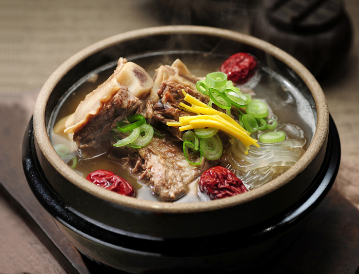

Document
갈비탕

갈비탕: 깊은 맛과 부드러운 식감의 조화
갈비탕은 소갈비를 오랜 시간 우려내어 만든 한국 대표 국물 요리입니다.
맑고 시원한 국물에 부드러운 갈비가 어우러져 깊은 맛을 내는 것이
특징입니다.
갈비탕의 매력
깊고 진한 국물: 소갈비를 오랫동안 우려내어 육수를 만들기 때문에 깊고
진한 맛을 느낄 수 있습니다. 부드러운 갈비: 오랜 시간 우려낸 갈비는
부드럽게 씹히는 식감이 일품입니다. 따뜻하고 든든한 한 끼: 추운 날씨에
따뜻하게 즐기기 좋으며, 든든한 한 끼 식사로 손색이 없습니다. 특별한 날에
어울리는 음식: 잔칫날이나 명절에 빠지지 않고 등장하는 대표적인
음식입니다.
갈비탕의 역사와 유래
갈비탕은 옛날부터 귀한 손님을 대접할 때 주로 사용되었던 음식입니다.
소갈비는 구하기 어렵고 값이 비쌌기 때문에 특별한 날에만 맛볼 수 있는
음식이었습니다.